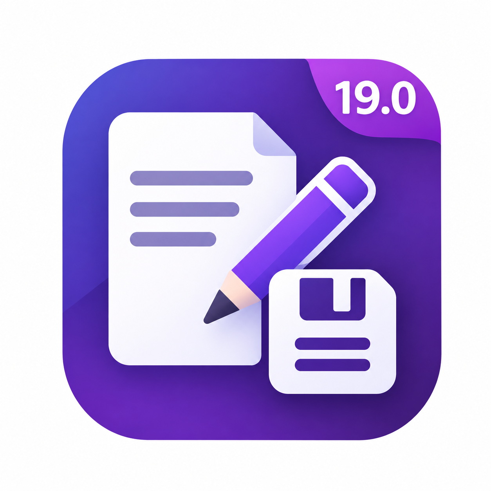

ODOO 19 · BACKEND FORM VIEWS
Read first.
Edit when you choose.
Explicit Form Edit / Save Buttons opens existing records in standard full-page forms in read-only mode. Click Edit to unlock permitted fields, then Save or Discard to finish.
How it works
| Step | Your action | Form behavior |
|---|---|---|
| 01 · View | Open a record | Fields are read-only. The Edit button is available when the view permits editing. |
| 02 · Edit | Click Edit | Permitted fields become editable. Save and Discard replace Edit. |
| 03 · Save | Click Save | Successful saving locks the form again. Validation errors leave it editable for correction. |
| 04 · Discard | Click Discard | Existing records revert their unsaved changes and return to read-only mode. New unsaved records use Odoo's normal back navigation. |
A familiar button style
The native cloud-save and X-discard icons are removed from covered forms. Edit and Discard use secondary button styling. Save keeps its outlined-primary style, and New keeps its native Odoo style. Read-only mode shows New / Edit; edit mode shows only Save / Discard, subject to view permissions.
Illustration only — these are not live Odoo controls.
Read-only form
NewEditEditing form
SaveDiscardScope and permissions
- Standard full-page backend forms with a control panel are covered.
- Click a locked field or its label and the Edit button jumps twice to remind you to unlock the form. Links and action buttons are excluded. Reduced-motion users see a subtle pulse instead.
- New opens directly in edit mode with Save / Discard: enter the required fields and Save. After successful saving, the record becomes read-only.
- Pager navigation and Duplicate start the newly opened form in read-only mode.
- Popup dialogs, wizards, and forms without a control panel retain their native workflow.
- Existing read-only field rules, view restrictions, and server access rights still apply.
Odoo's automatic saving during navigation, tab visibility changes, and business actions is retained. Chatter, business-action buttons, list editing, imports, and API operations are not blocked by this addon.
Installation
- Place
web_explicit_form_editin a directory included in your Odooaddons_path. - Restart the Odoo server and enable developer mode.
- Open Apps and run Update Apps List. Remove the default Apps filter.
- Search for Explicit Form Edit / Save Buttons and install it.
- Hard-refresh the browser with Ctrl + Shift + R.
Already installed? Upgrade the module and hard-refresh after updating its files. Uninstall and refresh to restore native form behavior.